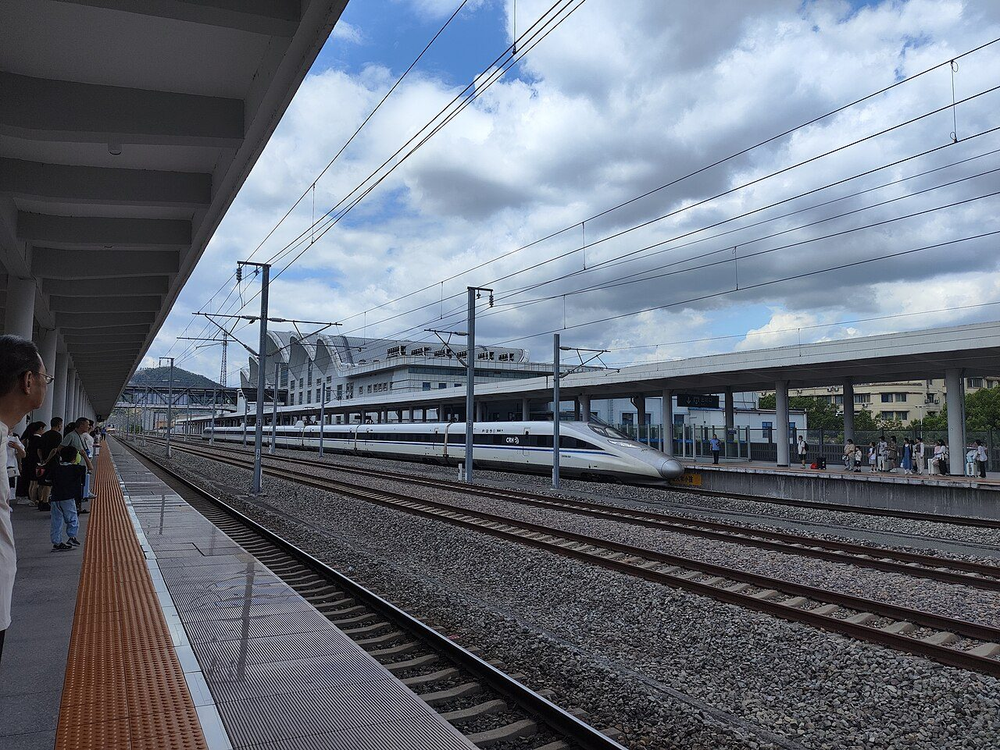
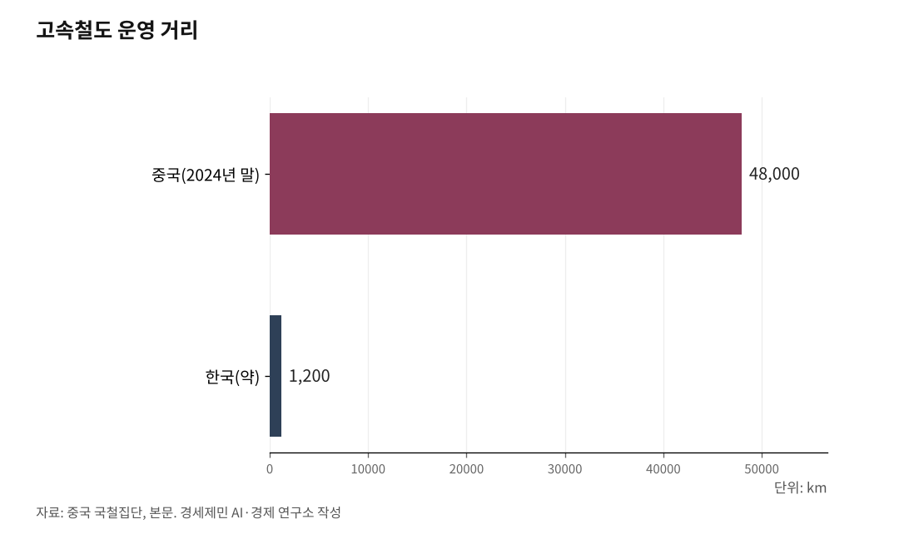

中, 국내 6만km 고속철도망·국외 대륙철도 13만편 동시 확대
2030년 6만km 목표·세계 고속철도 70% 차지·시속 350km 여객망 가속
중국·유럽 화물열차 누적 13만편·5200억달러 돌파, 중국 129곳과 유럽 26개국 235도시 연결
국내 시속 350km 여객망과 국외 시속 120km 화물철도, 분리된 두 시스템
한국 고속·준고속철도 약 1200km, 제4차 국가철도망 2030년 5341km 방향
중국 철도가 두 축으로 동시에 뻗는다. 국내에는 시속 350km급 고속철도 여객망, 국외에는 시속 120km급 재래식 화물철도다. 두 망은 같은 철도가 아니다. 격자형 고속철도망 팔종팔횡(八縱八橫)과 중국·유럽 화물열차(CRE, China Railway Express, 中歐班列)는 서로 다른 선로 위에서 굴러간다.

1. 국내 가속 ① 쓰촨성 위쿤고속철도 부설 시작, 충칭에서 쿤밍까지 3시간
2026년 5월 8일 오전 10시, 쓰촨성 이빈시(宜賓市) 차오쥐촌 특대교에서 위쿤(渝昆)고속철도 쓰촨~윈난 구간(川滇段) 레일 부설이 시작됐다. 이빈에서 윈난성 옌진남(鹽津南)까지 157km, 본 운행 선로 152.4km, 분기기(레일 갈림 장치) 17개를 깐다. 최대 경사도가 25퍼밀(1km 주행 시 25m 상승)에 이르는 산악 구간이다.
중국 철도 당국은 스마트 조정 플랫폼을 활용해 하루 최대 12km씩 레일을 깐다. 이 속도라면 5월 말 부설을 마친다.
위쿤고속철도는 충칭서역에서 쓰촨성·구이저우성·윈난성을 거쳐 쿤밍남역에 들어가는 약 700km 노선이다. 설계속도 시속 350km다. 충칭서~이빈 구간은 2024년 통차했고, 윈난 구간은 2026년 3월 부설을 시작했다. 쓰촨~윈난 구간까지 더해지면 충칭에서 쿤밍까지 3시간대로 줄어든다.
위쿤고속철도는 팔종팔횡 가운데 베이징~쿤밍 통로(京昆通道)의 핵심 구간이다. 국내 고속철도망의 마지막 빈 구간이 채워진다.

2. 국내 가속 ② 상하이 바오산역 2027년 통차, 일평균 14만8000명 설계
같은 시점, 상하이직할시 바오산구(寶山區)에서는 호위룽(滬渝蓉)고속철도 상하이~난징~허페이 구간(沪宁合)의 기점역인 바오산역 공사가 속도를 낸다.
신화통신은 2026년 5월 8일 보도에서 바오산역 총 건축 규모를 약 48만㎡, 설계 기준 일평균 철도 여객 도착·출발량을 14만8000명으로 전했다. 2027년 중반 통차가 목표다.
호위룽고속철도는 상하이~우한~충칭~청두를 잇는 약 2100km 노선으로, 설계속도 시속 350km다. 팔종팔횡 양쯔강 연안 통로(沿江通道)의 주축이다. 전 구간 통차 시 상하이~충칭 5시간 18분, 상하이~청두 6시간 42분이 된다.
3. 중국 고속철도 4만8000km·2030년 6만km, 한국은 약 1200km
중국 고속철도 운영 거리는 4만8000km(2024년 말, 국철집단)에 이른다. 세계 고속철도 운영 거리의 70% 이상이다. 중국 정부는 2030년까지 6만km로 늘릴 계획이다.
한국 고속·준고속철도 운영 거리는 약 1200km다. 한국 정부의 제4차 국가철도망 구축계획(2021~2030)은 전체 철도망을 2019년 4274km에서 2030년 5341km로 늘리고, 고속철도 운행 지역을 확대하며 시속 400km급 초고속열차 운행 기반을 마련하겠다는 방향을 제시했다.
여기서 한 가지 짚어야 할 사실이 있다. 국내 고속철도망 팔종팔횡과 국외 중국·유럽 화물열차는 같은 망이 아니다.
팔종팔횡은 시속 350km급 여객 전용 고속선이다. 화물 운송이 거의 없다. 야간 0~6시는 선로 정비 시간이라 열차가 다니지 않는다. 중국·유럽 화물열차는 시속 120km급 재래식 화물철도다. 정시 운행선 93개가 모두 시속 120km 기준이다.
4. 국외 확대 ① 만저우리·아라산커우, 중국·유럽 화물열차 5월 13만편·5200억달러
국외 중국·유럽 화물열차의 두 관문은 동쪽 만저우리(滿洲里)와 서쪽 아라산커우(阿拉山口)다.
신화통신 한국어판 보도(2026.5.7.)에 따르면, 네이멍구자치구 만저우리시 철도 국경 통관구역(通商口, 중국 국경의 화물·여객 통관 시설)은 4월 22일 기준 올해 수출입 화물 처리량이 693만4600t으로 전년 동기 대비 역대 최고치를 경신했다. 같은 기간 중국·유럽 화물열차는 1300편 이상 통과했다. 만저우리는 중·러 철도 무역의 60% 이상을 처리한다. 러시아 자바이칼주 정부 부의장 대행 파벨 볼코프는 통관구역의 연간 화물 처리 능력이 약 2600만t에 이른다고 밝혔다.
서쪽 신장웨이우얼자치구 아라산커우 통관구역도 2026년 5월 7일 16시 중국·중앙아시아 화물열차 3000편 돌파를 기록했다. 전년보다 19일 빠르다. 중국신문망(中新网) 보도(2026.5.8.)는 일평균 통행 20편 이상, 단일 최고 35편이라고 전했다. 스마트 검사·심사 시스템 도입으로 단일 열차 검사 효율이 70% 올랐다. 아라산커우 통관구역의 통행 노선은 128개, 21개국에 이른다.
5월 9일 오전 10시에는 허난성 정저우시 푸톈(圃田)역을 출발해 함부르크로 향하는 X8037 열차가 중국·유럽 화물열차 누적 13만편·5200억달러 돌파의 표지가 됐다. 중국신문망 보도(2026.5.9.)에 따르면, 중국·유럽 화물열차는 중국 129곳에서 출발해 유럽 26개국 235도시, 아시아 11개국 100여 도시에 이른다. 운임은 운행 초기 대비 40% 이상 떨어졌다.
5. 국외 확대 ② 폴란드 마와셰비체, EU 진입 약 90%·9월 폐쇄 사태
중국·유럽 화물열차의 유럽 측 관문은 폴란드 동부 마와셰비체(Małaszewicze) 환적역이다. Asia Times·Caixin Global·로드스타 등 다수 매체는 마와셰비체가 중국·유럽 화물열차의 EU 진입 약 90%를 처리한다고 보도했다. 유라시아철도연맹지수(Eurasian Rail Alliance Index)는 84.7%로 보고했다. 국제도로철도복합운송연맹(UIRR)은 두 수치 사이 범위로 본다. 어느 쪽이든 마와셰비체가 EU 진입의 사실상 단일 관문이다.
이 단일 관문의 취약성은 2025년 9월 드러났다. 9월 9일과 10일 러시아 무인기 20여 대가 폴란드 영공에 진입했다. 폴란드는 9월 12일 0시부터 벨라루스 국경을 전면 폐쇄했다. 러시아·벨라루스 합동 군사훈련 자파드(Zapad) 2025와 무인기 침입이 동시에 작용했다. 폐쇄 첫 주 130편 이상의 중국·유럽 화물열차가 벨라루스 브레스트(Brest)역에 발이 묶였다. 9월 25일 0시 재개통됐다.
국내에는 팔종팔횡, 국외에는 중국·유럽 화물열차. 두 망의 속도와 사용 선로는 다르지만, 중국 철도 정책의 두 축이 동시에 확대된다.
참고문헌
· "[영상] 中 만저우리 통상구, 중·러 무역 활기 '뿜뿜'", 신화통신 한국어판, 2026.5.7., https://kr.news.cn
· "渝昆高铁川滇段启动铺轨，明年通车后从成都3小时跑拢昆明", 四川在线, 2026.5.8., https://sichuan.scol.com.cn/ggxw/202605/83251103.html
· "上海宝山站建设加速推进", 신화망(新华网) 사진뉴스, 2026.5.8., https://www.news.cn/photo/20260508/5ac426619c90467ab7810014587a1ac8/c.html
· "提前19天 新疆阿拉山口口岸今年通行中欧（中亚）班列突破3000列", 중국신문망(中新网), 2026.5.8., https://www.chinanews.com.cn/ydyl/2026/05-08/10617617.shtml
· "中欧班列累计开行突破13万列 货值超5200亿美元", 중국신문망(中新网), 2026.5.9., https://www.chinanews.com.cn/cj/2026/05-09/10617987.shtml
· "4.8万公里！我国高铁运营里程再创新纪录", 중국 정부망(中国政府网), 2025.1.2., https://www.gov.cn/yaowen/liebiao/202501/content_6995868.htm
· "4.8万公里！中国高铁营业总里程占世界七成以上", 광명망(光明网), 2025.7.10., https://m.gmw.cn/2025-07/10/content_1304079369.htm
· "제4차 국가철도망 구축계획(2021~2030) 목표 및 추진과제", 국가철도공단, 2021.7.5., https://www.kr.or.kr/sub/info.do?m=05010101
· "中欧班列东通道2026年累计通行突破2000列", 黑龙江省人民政府, 2026.4.14., https://www.hlj.gov.cn/hlj/c107856/202604/c00_31933270.shtml
· "Poland border closure choking China-EU rail trade", Asia Times, 2025.9.25., https://asiatimes.com/2025/09/poland-border-closure-choking-china-eu-rail-trade/
· "Poland Reopens Belarus Border, Restoring Key China-Europe Rail Route", Caixin Global, 2025.9.24., https://www.caixinglobal.com/2025-09-24/poland-reopens-belarus-border-restoring-key-china-europe-rail-route-102365374.html
· "Data of the week: How important is Małaszewicze for China-Europe trade?", UIRR, 2025.9.24., https://www.uirr.com/web-news/data-week-how-important-malaszewicze-china-europe-trade
· "China-Europe rail severely disrupted over Poland border closure", The Loadstar, 2025.9.18., https://theloadstar.com/china-europe-rail-severely-disrupted-over-poland-border-closure/
· "NATO shoots down Russian drones in Polish airspace", CNN, 2025.9.10., https://www.cnn.com/2025/09/09/europe/poland-scramble-jets-russian-drone-reports-intl-hnk-ml
※ 이 기사는 AI 프로그램 클로드를 활용해 작성했습니다.
사진 출처
· [대표사진] Astrid [aroma], "Hexie CRH380A (53996963795).jpg", 위키미디어 공용, CC0, https://commons.wikimedia.org/wiki/File:Hexie_CRH380A_(53996963795).jpg
※ 이 기사는 인공지능을 활용해 작성했습니다.
관련기사
- 한국 대륙 철도 다섯 통로, 북한 못 지나면 무용지물
- 중국-유럽 화물열차 동부 통로, 올해 2000편 돌파…화물량 44.8% 급증
- [중국철도⑫] 철도 연결 항만 90%, 컨테이너 철도 몫 중국 3.8% 한국 2.2%
- [중국철도⑪] 중국·키르기스·우즈베크 철도, 착공 2년에 공정률 목표 5%
저작권자 © AI경세제민 무단전재 및 재배포, AI학습 및 활용 금지